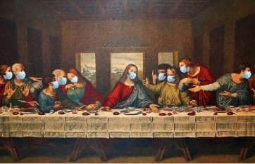

Keivan will leave the country to study abroad. He invited all his friends to a restaurant for his goodby party. He asked them to stay home for two weeks before the party night, to be sure that none of them has contracted the coronavirus.

To make the party short, Keivan reserved a round table, specified each person's seat, and put his guests' order in front of their seats. The party was over, and everyone enjoyed the food. Unfortunately, some guests had fevers right after the party. Therefore, Keivan asked them all to take the PCR tests again. The results of the tests were not as all hoped for. Coronavirus had affected some of his friends. We know that a PCR test could have a false negative. But, it never has a false positive. This means that if a person has a negative result, he may be healthy or has contracted the coronavirus. But, people with positive results have definitely contracted the virus.
Now, Keivan is confused. He does not know how his friends got sick. The restaurant manager told him that exactly one of his friends ordered a bat soup. He is determined to find those who may have ordered this soup. Thus he asked for the video check. Unfortunately, the video captured by the restaurant's CCTV has a low quality, making it hard to see their orders. However, he could see their activities and their timings. From these activities, he wants to find those who may have ordered the bat soup and spread the coronavirus.
Keivan wrote down his friends'activities in chronologically ascending order. Each activity tells that a person talks to one of his adjacent neighbors. We know that the person who ate the bat soup got affected by the virus immediately. After that, if a sick person talks to his neighbor, the second person gets sick. There are no other ways for virus transmission.
The first line of the input has three positive integers: $n$, $m$ and $q$ ($1 \le m \le n \le 10 ^ 5, 1 \le q \le 10 ^ 5$) which are the number of guests, the number of sick guests, and the total number of guests activities, respectively. Guests are numbered from 1 to $n$ in clockwise order. It means that the guest $i + 1$ is the left neighbor of guest $i$ (guest 1 seats in the left chair of $n$). The next line contains exactly $m$ distinct integers $a_i$ ($1 \le a_i \le n$); each denotes one of guests who are affected by the coronavirus.
The next $q$ lines are guests' activities in the chronologically ascending order of time. Each line contains an integer $b_i$ ($1 \le b_i \le n$) following by a character $c_i$ ($c_i \in {L, R}$). This indicates that the guest $b_i$, talks to his left (L) or his right (R) person.
Print all the guests who might have ordered the bat soap, in the ascending order, in one line.